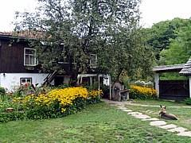

Двузвездната къща за гости "Маришница" се намира в махала Маришница на град Априлци, в подножието на връх Марагидик, в непосредствена близост до река Маришница.
Пътят от Априлци до отбивката за Маришница и широк и отлично асфалтиран, от отбивката до къщата има 3 км. по сравнително добре поддържан път - проходимо е и с обикновен автомобил, а през зимата се почиства редовно от натрупания сняг.
Реката, която тече досами къщата, не е кой знае колко пълноводна, но е отлично място за плаж и навява невероятно спокойствие. Самата къща е на два ката - горният е за гостите. Това са четири светли стаи с по две широки легла персон и половина, скрин или гардероб за багаж. Спалното бельо се сменя на всеки 3 дни. Към всеки две стаи има баня-тоалетна със собствен бойлер. Къщата е подходяща и за семейства с малки деца, тъй като има възможност за ползване на пералня. За разлика от много други места в планината, тук имате къде да си изсушите дрехите на огромния простор в двора.
За хранене през лятото има две летни кухни - в двата края на голям цветен двор. И двете са оборудвани за съхраняване и приготвяне на храна и осигуряват спокойствие при хранене и купони на две различни компании. Към едната лятна кухня има и телевизор.
